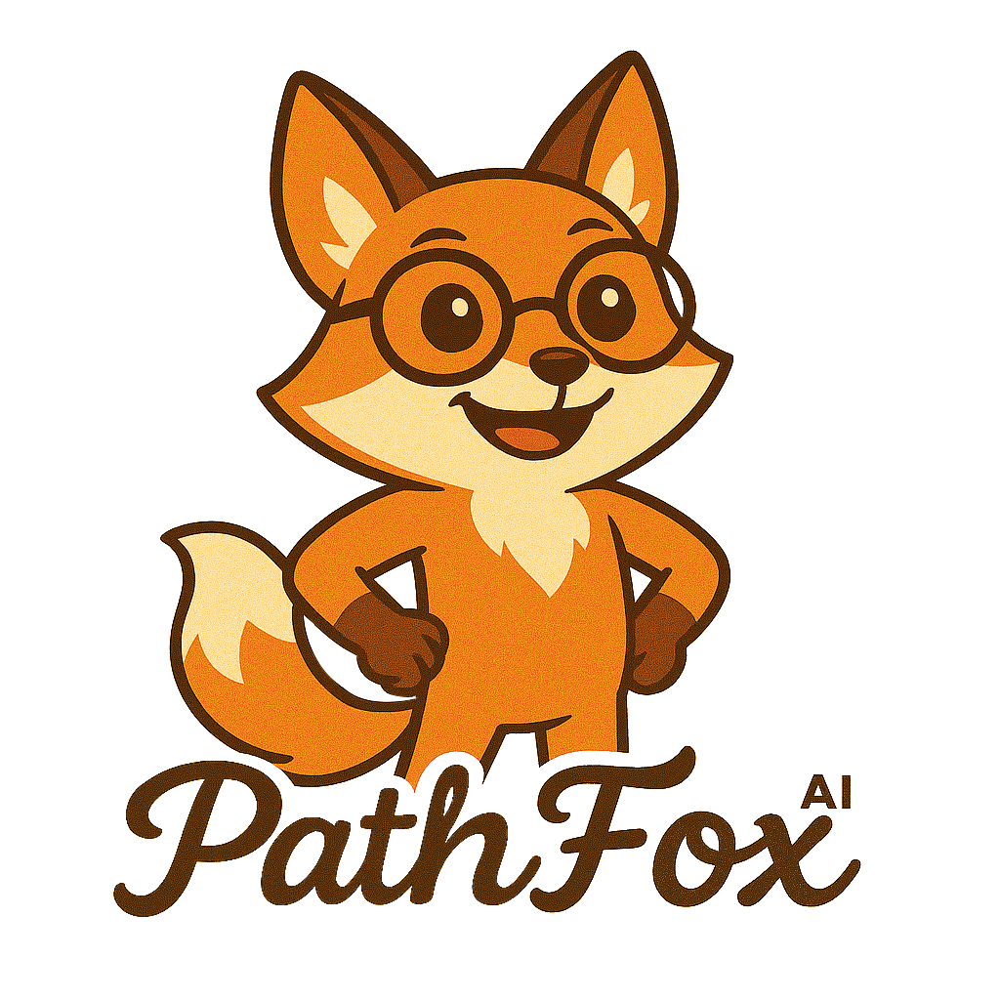

Submissions
Groups themes, finds duplicates, flags hostility, and summarizes what users are asking for.
"Are there any duplicate submissions?"
"What are the most common features requested?"
PathFoxAI reads every submission, tracks every vote, and watches every discussion — so you always know what matters most. No spreadsheets. No guessing.
Included with all PathPro paid plans. No extra cost.
PathFoxAI reads all of your feedback, groups it by theme, spots duplicates, and tells you exactly what matters — without you lifting a finger.
PathFoxAI calculates a demand score for every feature — weighting upvotes, subscriber count, and comment activity into a single ranking you can trust.
PathFoxAI continuously monitors your roadmap health, flags milestones falling behind, and detects hostile or unproductive discussions before they escalate.
Search your tasks, features, submissions, and comments using natural language. No filters, no query syntax — just ask PathFoxAI and get a clear, sourced answer.
When PathFoxAI surfaces an insight, you can act on it right there. Create tasks, move features to your roadmap, and update milestones — all from the conversation.
PathFoxAI adapts its tools, prompts, and analysis to the page you're on — so every answer is relevant.
Groups themes, finds duplicates, flags hostility, and summarizes what users are asking for.
Ranks demand, analyzes voting patterns, and identifies the most requested capabilities.
Searches tasks, analyzes milestones, and checks progress across your entire roadmap.
Summarizes releases, tracks updates, and provides historical context on shipped features.
"PathFoxAI is kind of magical, giving deep insight on what my SaaS customers want next. It’s truly like having a product growth expert on the team."

PathFoxAI is included with all PathPro paid plans. Start understanding your users, prioritizing with confidence, and shipping with clarity.
Check PricingIncluded with all paid plans.